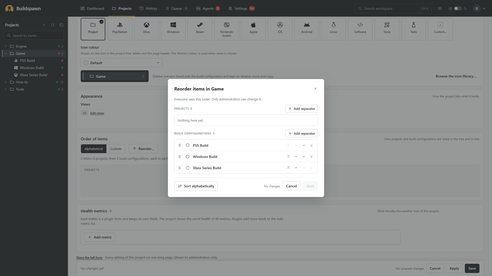

Tree order and separators
Put the projects and build configurations of the tree in the order your team wants, and group them with named separators.
How the tree is sorted
- Every project has two groups: projects first, then build configurations. Nothing crosses the line between the groups.
- The default order is alphabetical.
- A project can switch to a custom order. Then each group keeps the order you set.
- Everyone sees the same order. It also applies to the Projects page and the dashboard list.
Who can change it
Only administrators (the Administer permission) can change the order and the separators. For the whole server, use the root project settings.
Reorder with the dialog

- Open the project and click Settings. On General, in the card Order of items, click Reorder.... The card says how the items are sorted now. The dialog is titled Reorder items in Game.
- Drag an item by its handle. Or use Move to top, Move up, Move down and Move to bottom. With the keyboard press Space to pick up, the arrow keys to move and Space to drop.
- Click Save. The x button, Cancel and Esc leave without saving. The footer says No changes until you move something. Clicking outside the dialog does not close it.
Reorder with the tree
- In the header of the project tree switch on Reorder mode. It shows only if you may reorder something.
- Handles appear on the rows you may move. Drag a row by its handle, only among its own siblings.
- Every drop saves that project and shows an Undo toast. Press Esc to cancel a drag.
Separators
A separator is a named line in the tree, for example Main, Drops or Release. It groups the items under it. Add one with Add separator in the dialog, give it a name, and drag it to its place. You can rename and delete separators there. A separator belongs to one group: the projects or the build configurations.
Back to alphabetical
Use Sort alphabetically in the dialog (it asks first), or click Alphabetical in the card Order of items. The custom list is dropped. The card has two choices, Alphabetical and Custom.
What happens when things change
| Change | What happens |
|---|---|
| A new item in a custom order | It is added at the end of its group. In alphabetical mode nothing changes. |
| Rename | The item keeps its place. |
| Move to another project | It leaves the old order and goes to the end of the group in the new project. |
| Copy | The copy is a new item. |
| Delete | The entry is dropped. |
| Items you cannot see | They are not shown but keep their place. A save only orders the visible items among themselves. |
A worked example
The Game project lists Windows Build, PS5 Build and Xbox Series Build. The studio wants the dev kits together. It sets a custom order, adds the separator Consoles above PS5 and Xbox, and Desktop above Windows.
Problems and fixes
| Problem | What to do |
|---|---|
| I cannot change the order | Only administrators can. The dialog says so at the top. |
| The order changed back | The project is in alphabetical mode. Save a custom order again. |
| A separator is not shown on the dashboard | The dashboard list applies the order but not the separators. The tree and the Projects page show them. |